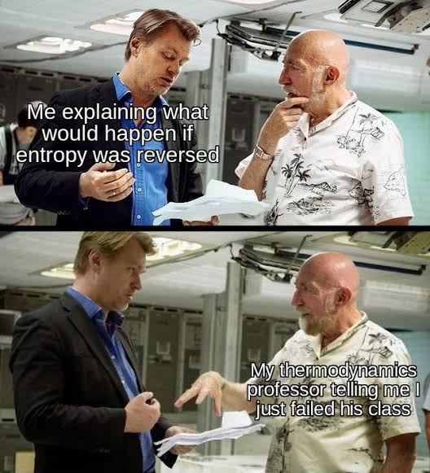

FIRST OFF IM TOO DUMB FOR THIS MOVIE
Tenet introduces the idea of "time inversion," where objects move backward in time due to reversed entropy. This concept aligns loosely with thermodynamic principles but stretches scientific plausibility. Now you tell me how is the villian really a 'villian' if all he wants is something good for the EARTH(saying this as a Yeagerist and a 'fan' of Madara) OK SEROUS- voilates the laws of thermodynamics(who cares?) but imagine needing an oxygen mask(cylinder or whatever) to breathe bcuz ur lungs cant to function in reverse. AND if evrythings in reverse(for someone experiencing the time inversion) how are photons not moving in reverse?I mean how is it possible for u to see properly? I might not make sense but so does this movie.
While time manipulation and reversed entropy exist in theoretical discussions,Tenet bends physics rules for cinematic thrill rather than strict realism. The line between physics and fiction is definitely blurred. The movie is inspired by real physics concepts like entropy and time’s arrow — in reality, entropy increases over time, giving us a sense of forward motion. But the idea of reversing entropy to move backward through time? That’s pure science fiction. In actual physics, there's no known way to isolate and reverse entropy for a person or object. It would violate the second law of thermodynamics. Nolan takes that real concept and asks, “What if we could break the rules?” That’s where fiction takes over — and to be fair, it’s a bold and creative leap. So, while Tenet is grounded in real scientific ideas, it definitely bends the laws of physics to serve its mind-bending narrative. It’s not accurate science, but it’s inspired by science — and that’s what makes it so fascinating.